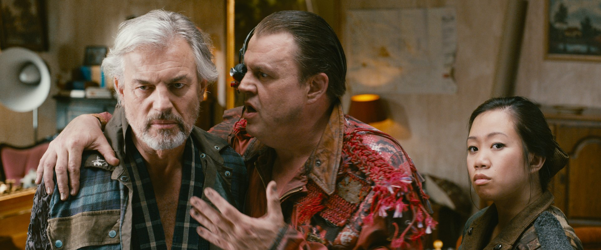

Everything is going to be fine.
Subtitles
9:12
Tears of Steel
Direct
7:26
−4:48
Everything is going to be fine.
Can’t play this file
The server can’t convert it either.
Direct
Remux
Decode
Convert
Change quality
Try again